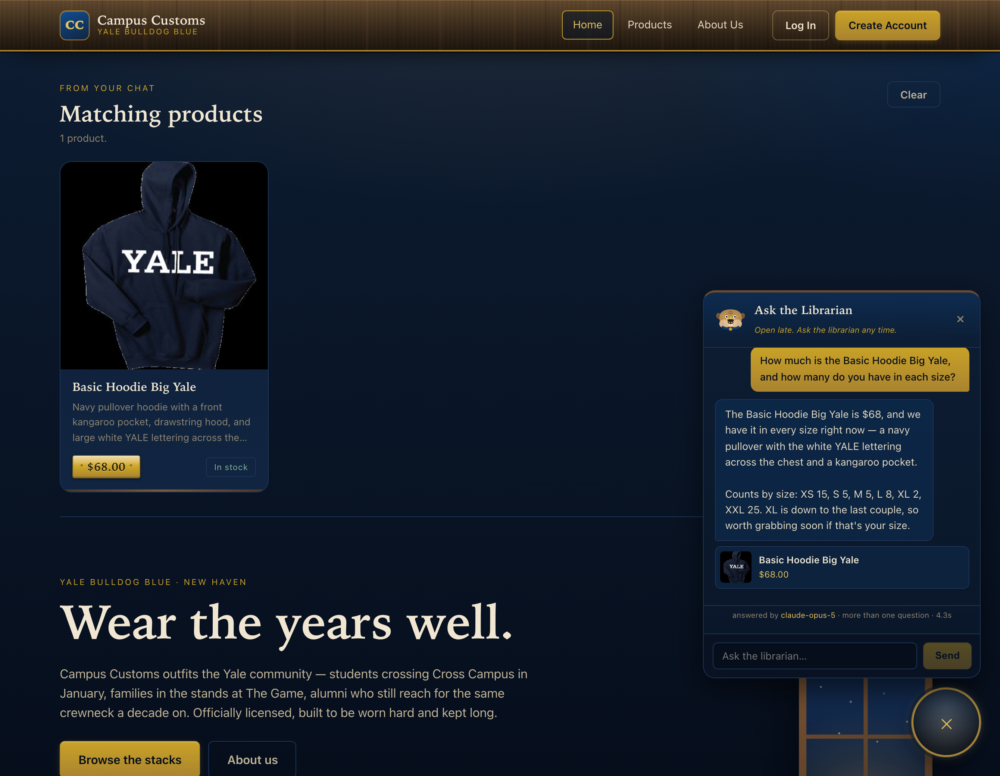
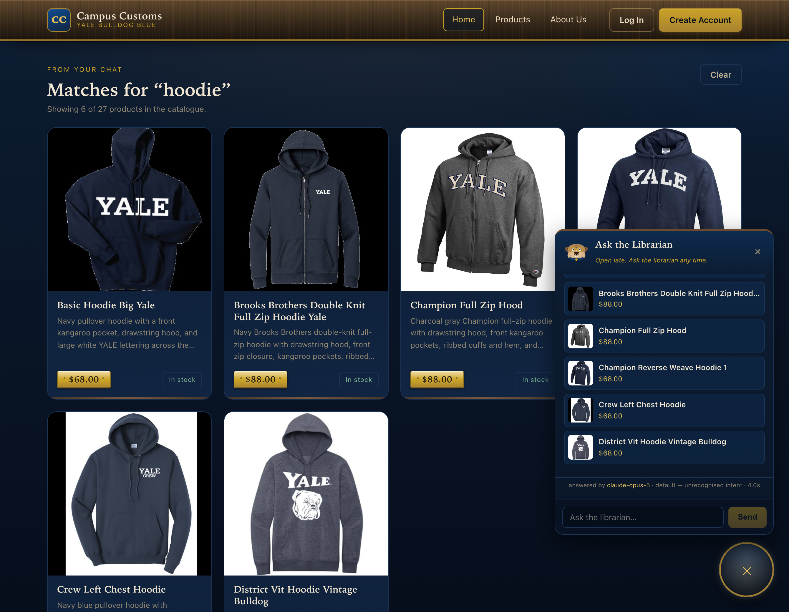
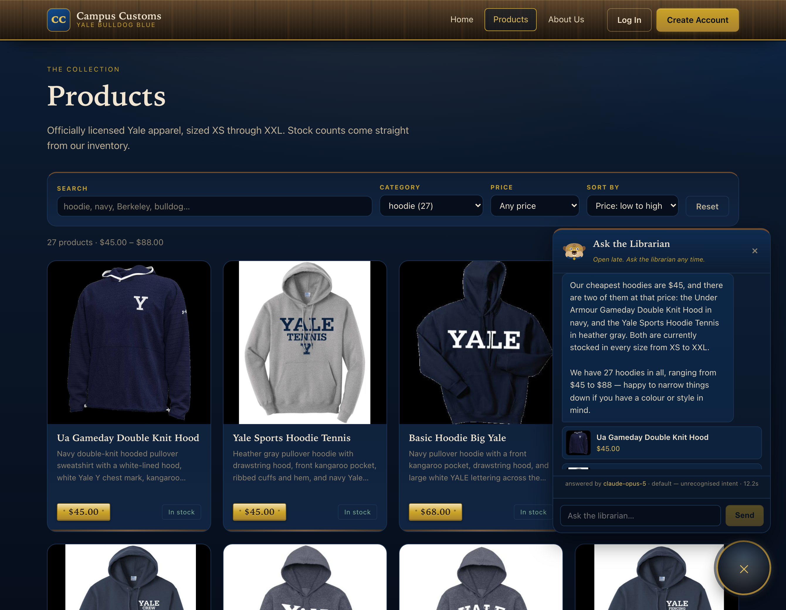

Three checks run against the running site with Playwright — a real browser, the real
frontend on localhost:5173, and the real FastAPI backend and SQLite
catalogue behind it. Every screenshot below was captured during that run, and every
number the assistant stated was compared afterwards against the database.
Chat sessions were run as a guest, so each answer was produced fresh rather than recalled from saved history.
1Inventory and price, straight from the database
The assistant is asked for a specific product's price and its stock in every size.
What was asked
“How much is the Basic Hoodie Big Yale, and how many do you have in each size?”
What it answered
The Basic Hoodie Big Yale is $68, and we have it in every size right now — a navy pullover with the white YALE lettering across the chest and a kangaroo pocket.
Counts by size: XS 15, S 5, M 5, L 8, XL 2, XXL 25. XL is down to the last couple, so worth grabbing soon if that's your size.
The database says
Basic Hoodie Big Yale price$68.00
Size
Qty
XS
15
S
5
M
5
L
8
XL
2
XXL
25
total 60 units

The reference desk open on the home page, answering the inventory question.
What this proves
✓ price $68
✓ XS = 15
✓ S = 5
✓ M = 5
✓ L = 8
✓ XL = 2
✓ XXL = 25
Every figure in the answer — the $68 price and all six per-size counts — matches the
catalogue and inventory tables exactly. The assistant reached
these by calling its get_product_details tool; it has no way to state a
price or a stock level that is not in the database.
2A category question draws product cards onto the page
A browsing question, answered in prose, with the matching products rendered as real cards in the main area of the site.
What was asked
“What hoodies do you have?”
What it answered
We have 27 hoodies, ranging from $45 to $88 — here are six to start. They split roughly into pullovers and full-zips, mostly navy or heather gray, with a few branded makes like Champion and Brooks Brothers at the top of the range.
Anything particular you're after — a zip or a pullover, a colour, or a price you want to stay under?

Six product cards appear on the page, captioned “FROM YOUR CHAT · Matches for “hoodie” · Showing 6 of 27 products in the catalogue. · Clear”.
Cards rendered
Basic Hoodie Big Yale
Brooks Brothers Double Knit Full Zip Hoodie Yale
Champion Full Zip Hood
Champion Reverse Weave Hoodie 1
Crew Left Chest Hoodie
District Vit Hoodie Vintage Bulldog
What this proves
The products are returned as structured data in the chat API's
products array — built from the catalogue rows the agent's search tool
returned, not parsed out of its text — so a card cannot show an invented product,
price, or photo. All six names above exist in the catalogue table. The
caption reports 6 of 27, the real number of hooded products, so a
sample is never presented as the whole answer. Each card is clickable and opens that
product's own page.
3Filter and sort (Problem 9) agreeing with the assistant
The Products page filtered to hoodies and sorted price low to
high, with the assistant asked the same question in the panel beside it.
What was asked
“What's your cheapest hoodie?”
What it answered
Our cheapest hoodies are $45, and there are two of them at that price: the Under Armour Gameday Double Knit Hood in navy, and the Yale Sports Hoodie Tennis in heather gray. Both are currently stocked in every size from XS to XXL.
We have 27 hoodies in all, ranging from $45 to $88 — happy to narrow things down if you have a colour or style in mind.
Top of the sorted grid
#
Product
Price
1
Ua Gameday Double Knit Hood
$45.00
2
Yale Sports Hoodie Tennis
$45.00
3
Basic Hoodie Big Yale
$68.00
4
Champion Reverse Weave Hoodie 1
$68.00
filters: category hoodie,
sort price low to high page reports: 27 products · $45.00 – $88.00

Filter and sort on the left, the assistant's answer on the right — both naming the same two $45 hoodies.
What this proves
The filtered, sorted grid leads with Ua Gameday Double Knit Hood ($45.00)
and Yale Sports Hoodie Tennis ($45.00), and the assistant names those same
two as the cheapest of 27 hoodies. They match because they are the same
query: the Products page and the agent's search tool both call
db.query_products, which does the filtering, ranking and sorting in SQL.
This is also the fix for a real bug found in Problem 9. The earlier tool scored products
in Python and showed the agent only the top six by keyword relevance, so
“what's your cheapest hoodie?” was answered $68 — the cheapest of the six
it happened to see — while $45 hoodies sat unseen. Nothing was invented and the answer was
still wrong. Sorting over the whole table in SQL is what makes the answer above correct.